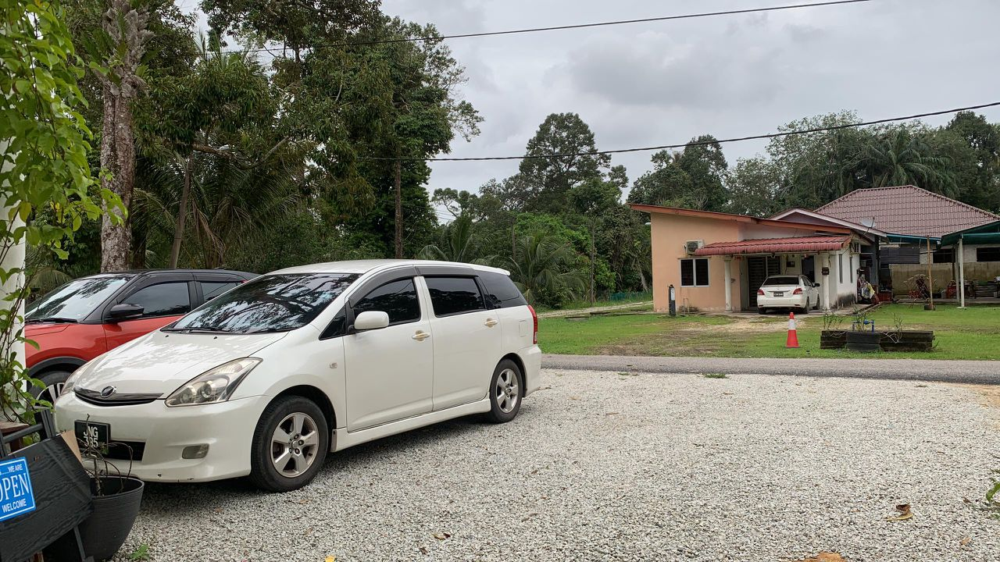
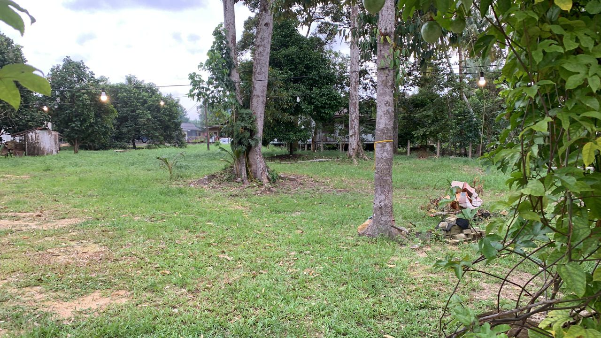
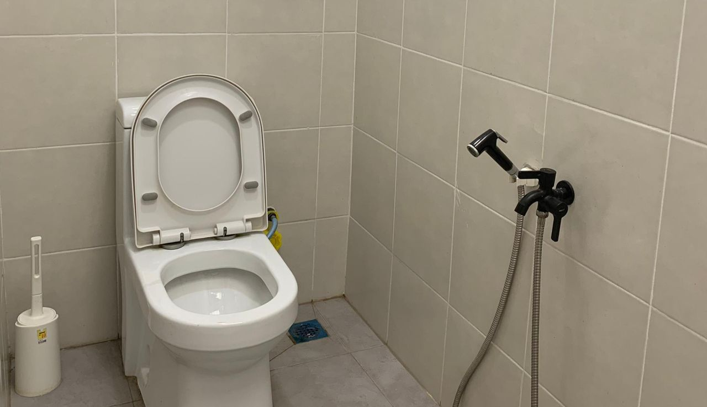
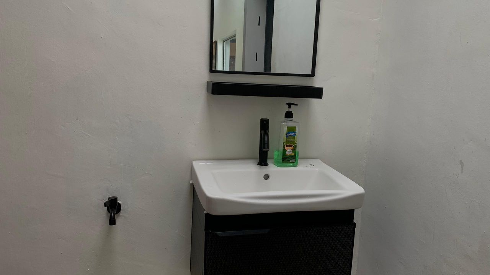
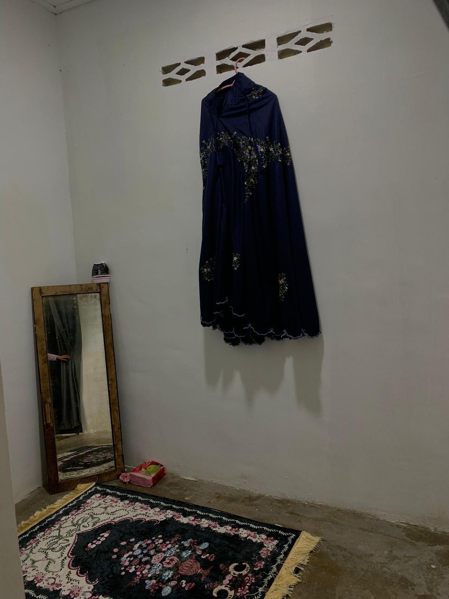
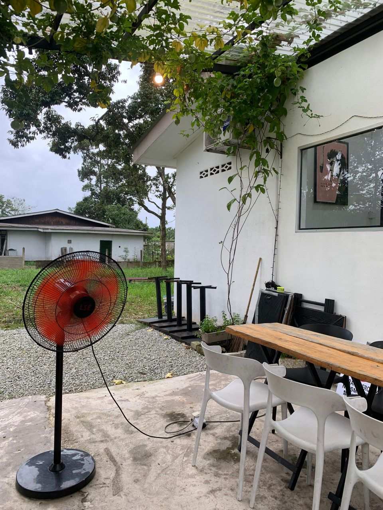

𝜗𝜚Parking Lot 𝜗𝜚
 The Teduh by Far Haus Cafe provides a spacious parking area for visitors. As shown, there is a well-maintained gravel parking lot that can accommodate multiple vehicles and also making it convenient for guests arriving by car. Additionally, there is an open grassy area nearby, which may also serve as extra parking space if needed.
𝜗𝜚 Toilet & Sink 𝜗𝜚
 Teduh by Far Haus Cafe also offers clean and well-maintained restroom facilities, including a modern toilet equipped with a bidet and a sink with a mirror. These amenities ensure comfort and hygiene for guests during their visit.
𝜗𝜚 Prayer Place 𝜗𝜚
Teduh by Far Haus Cafe also provides a prayer place for Muslim guests. This space is set aside to allow visitors to perform their prayers comfortably and conveniently. The area is simple and private, ensuring a peaceful environment for worship. Additionally, a prayer garment (telekung) is available for those who may need it, making it easier for guests to pray even if they did not bring their own. This thoughtful facility ensures that visitors can enjoy their time at the cafe without worrying about finding a suitable place for prayer.
𝜗𝜚 Dining Table 𝜗𝜚
The Teduh by Far Haus Cafe provides dining tables for guests to enjoy their meals comfortably. The seating area is arranged outdoors, offering a relaxing and natural atmosphere. Fans are also placed nearby to ensure good airflow and keep the space cool. This setup allows visitors to dine in a cozy and pleasant environment.